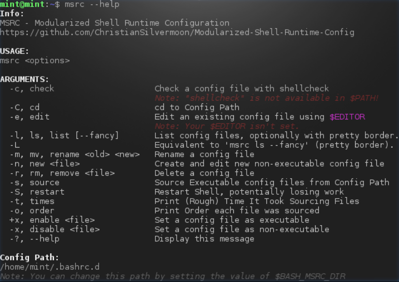
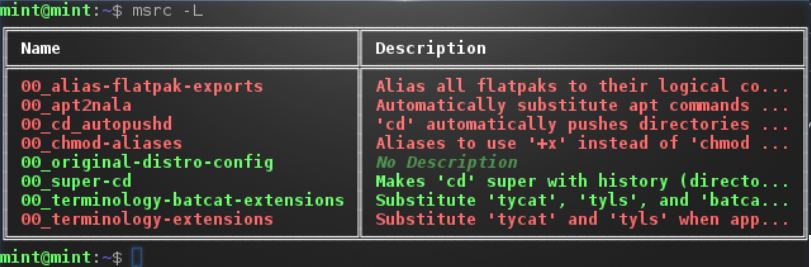
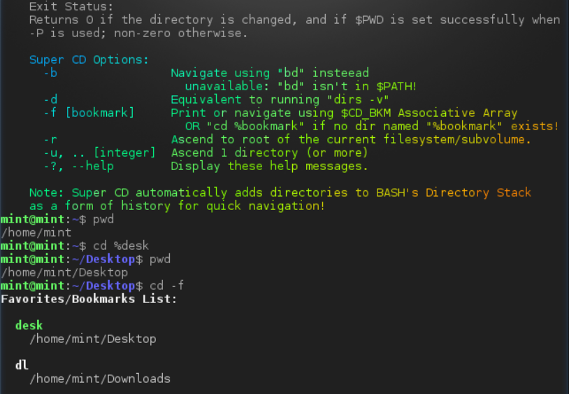
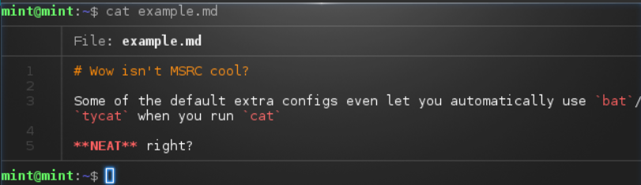
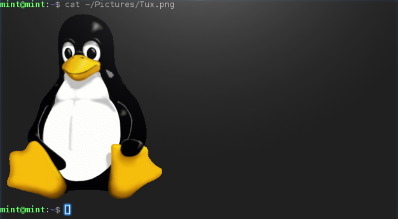

Modularized Shell Runtime Config
Get it on GitHub
Do you customize your ~/.bashrc a LOT?
The shell can be so powerful, and there's a seemingly endless amount of possabilities
...but when your ~/.bashrc gets big enough, filtering through all that customization
just to change what you're looking for can get pretty tricky...
...Introducing MSRC!
Now you can split your shell configuration into multiple files using a somewhat familiar convention: a directory named ~/.bashrc.d/!
Now you can make ~/.bashrc.d/00_my-new-cool-additions.bashrc instead and keep things nice, organized, and modular!
But wait, there's MORE!
You can control which ones will be sourced and which ones won't using the files' Executable Permission!
It even comes with a helpful management command called msrc, so once you set it up, give running msrc --help a chance!
You can check out the Screenshots Section below for a look!
Q&A
Q: How do I get this?
A: Just visit the main GitHub Page and checkout the README.md and USAGE.md files!
Q: Why is this page so basic?
A: Why NOT?
Q: What have you DONE?! This is overcomplicating things! You've ruined the simplicity of the UNIX Shell!!!
A: You're welcome ;)
Q: Wow, is this idea completely original!?
A: No, actually! It was semi-inspired by a post by Quentin ADAM on Medium.com
Q: Why is this page in permanent Dark Mode?
A: The Dark Side has free cookies. Also, I value my eyes.
Q: Where's all the jQuery and JavaScript and telemetry on this page?
A: That's the neat part! There isn't!
Screenshots
Note: All screenshots below showcase Terminology runnning on Linux Mint's Live System.
Help Message
A good help message when running msrc --help to ensure you hopefully won't get lost!
It will even tell you about important Environment Variables and missing Optional Dependencies!

List Your Configs
See which configs are marked as executable and which aren't. Red Means Disabled and Green Means Enabled.

Super CD (Extra)
An extra bashrc for this system that makes your cd more Super!

Automatic tycat/batcat Substitution (Extra)
An extra bashrc that automatically runs tycat or batcat depending on file type, but falls back to vanilla
cat when piping or passing in aguments that tycat or batcat can't do!
Also automatically uses tyls over regular ls in many cases!

